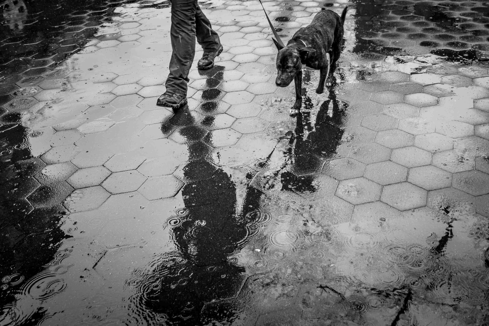

Vivimos rodeados de momentos únicos, de escenas maravillosas, no es necesario viajar a lugares remotos para encontrarnos con imágenes impactantes que nos generen preguntas y nos sorprendan. A diario nos encontramos atravesando lugares y momentos bellos pero no podemos verlos si no estamos preparados para descubrirlos. Si logramos desarrollar nuestra capacidad de observación, si logramos ser conscientes de las sensaciones que nos provocan ciertos espacios, determinadas personas, podremos transformar nuestra manera de ver el mundo y así descubrir la belleza que nos rodea. La fotografía no es mas que una herramienta para contar y compartir esa manera única que tenemos de ver el mundo. Por que el proceso de todo artista fotográfico debe ser ese, primero conocerse a si mismo, luego conocer el mundo y luego aprender a contarlo… La Street Photography intenta demostrar que estamos rodeados de belleza, que solo basta salir a la calle a encontrarla, dependerá de nuestra sensibilidad, de la manera personal que cada uno tiene de ver, de lo que sentimos y como lo contamos con luz…